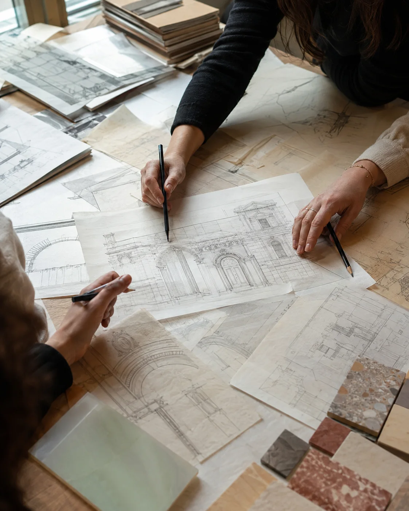

occurrence
DEMO — Looking at architecture workshop
A test workshop occurrence.
08NOV
11:00 am
Online (demo)
Places available
Enquire about this experienceworkshop
Immersive learning that connects history, material culture and community knowledge.
PKR 3,500 per participant · sample price
Choose a date & book →
Overview
Cultural and educational workshops combine learning with immersive experiences through hands-on activities, interactive discussion and practical exposure beyond conventional classroom learning.
Schedule

occurrence
A test workshop occurrence.
11:00 am
Online (demo)
Your place on the programme
Sample booking · No money is collected. Dates and prices are illustrative. Tickets are for this local walkthrough only.
Choose your date, add your participants, then try the payment and ticket experience.